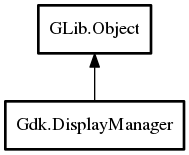

Gdk.DisplayManager – gdk-3.0 Reference Manual
Packages
gdk-3.0
Gdk
DisplayManager
default_display
@get
DisplayManager
get_default_display
list_displays
open_display
set_default_display
display_opened
DisplayManager
Object Hierarchy:

Description:
public
class
DisplayManager
:
Object
Namespace:
Gdk
Package:
gdk-3.0
Content:
Properties:
public
Display
default_display
{
set
;
get
; }
Static methods:
public
static
weak
DisplayManager
@get
()
Creation methods:
protected
DisplayManager
()
Methods:
public
weak
Display
?
get_default_display
()
public
SList
<
weak
Display
>
list_displays
()
public
weak
Display
?
open_display
(
string
name)
public
void
set_default_display
(
Display
display)
Signals:
public
signal
void
display_opened
(
Display
display)
Inherited Members:
All known members inherited from class GLib.Object
@new
newv
new_valist
get_type
get_class
@ref
unref
ref_sink
weak_ref
weak_unref
add_weak_pointer
remove_weak_pointer
@get
@set
get_property
set_property
get_data
set_data
set_data_full
steal_data
get_qdata
set_qdata
set_qdata_full
steal_qdata
freeze_notify
thaw_notify
dispose
constructed
notify_property
connect
disconnect
add_toggle_ref
remove_toggle_ref
bind_property
notify
ref_count